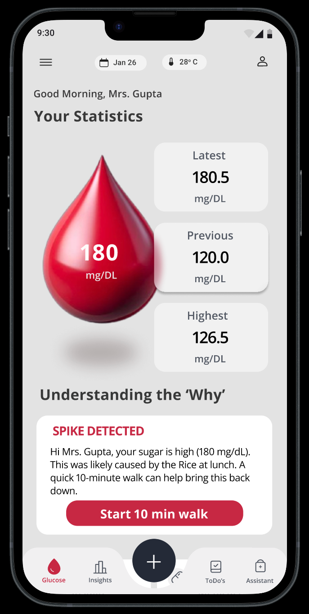
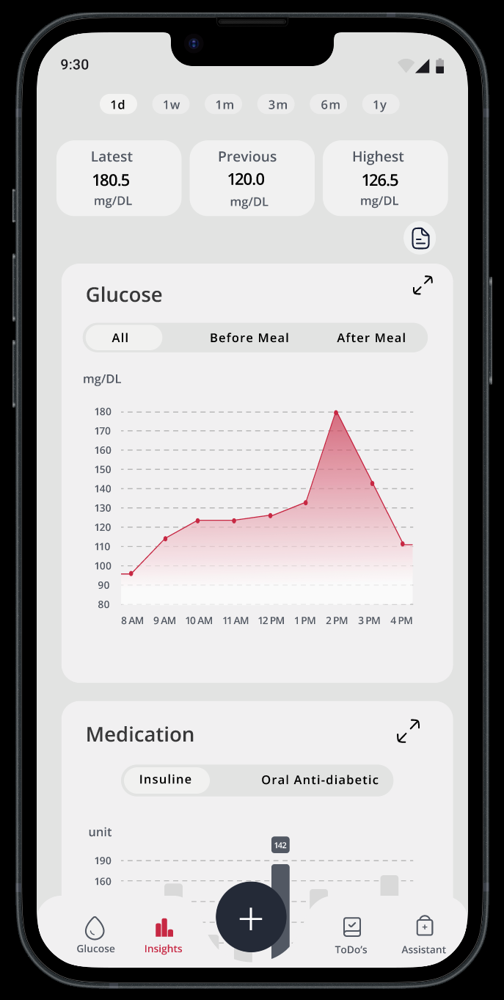
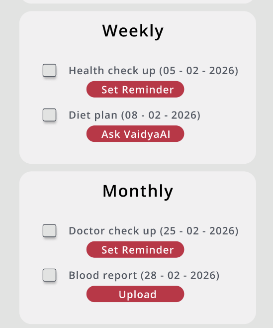
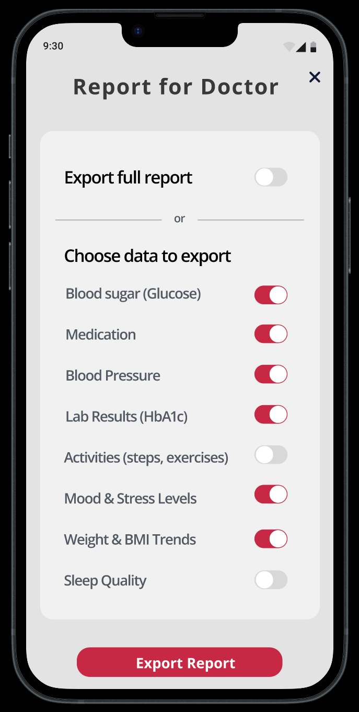
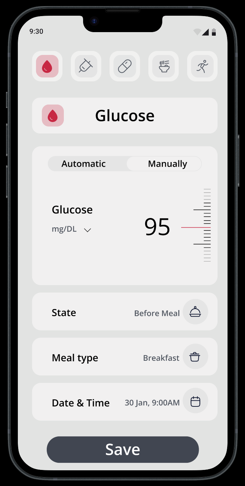
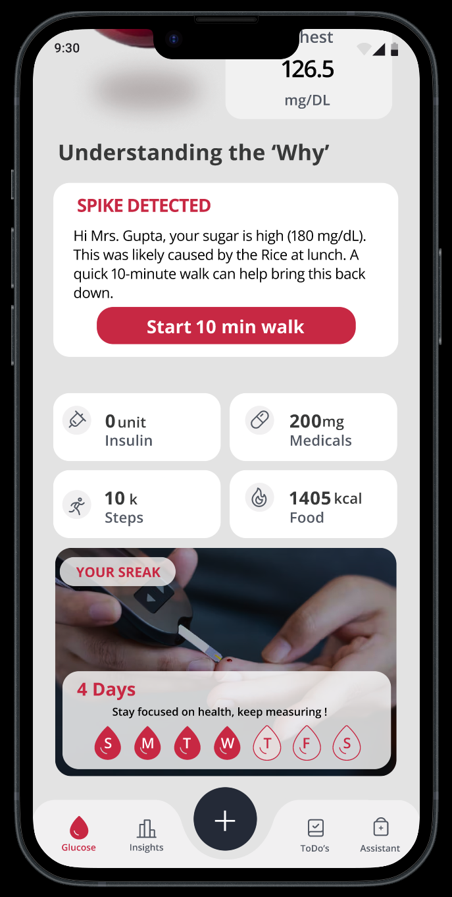
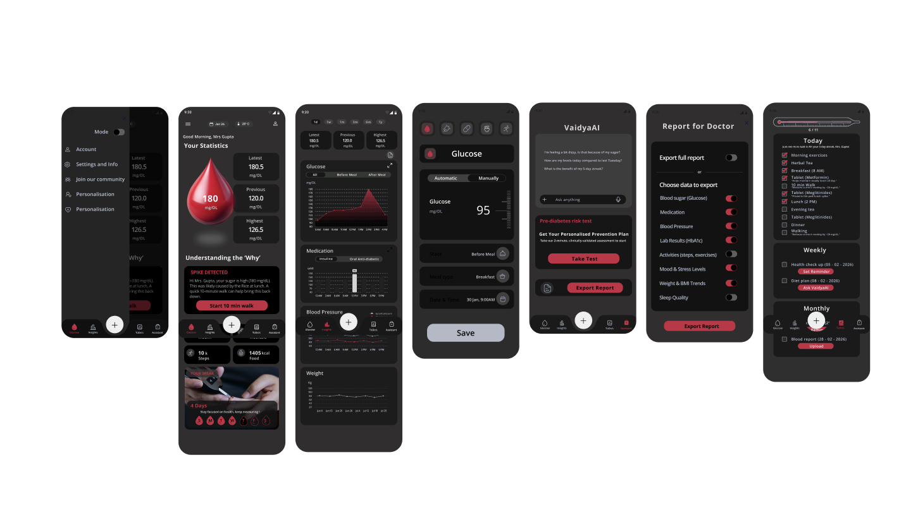

High-precision diabetes management.
Clarify is a mobile app for comprehensive diabetes management — combining intuitive tracking, smart reminders and educational content. I engineered it to solve the “Data-Hole” in chronic disease management, transitioning the user journey from reactive tracking to proactive understanding.
The Problem
Patients face “Numerical Fatigue” — a state where raw data points lead to anxiety rather than action, causing inconsistent tracking and poor clinical outcomes.
The Solution
A context-aware visual grammar that translates complex glucose velocity into actionable metabolic trajectories — giving users “The Why” behind every spike.

Typography & Colors
A clinical yet approachable aesthetic designed for high-stress readability.
Fitts’s Law
Oversized 72px touch targets for critical “Add Insight” actions, ensuring accuracy during hypoglycaemic episodes.
Hick’s Law
Reduced decision complexity by categorizing 12+ data types into 3 primary “Bento” clusters.
Jakob’s Law
Leveraged familiar medical-dashboard patterns to minimise the learning curve for elderly patients.
Engineering for clinical success.
A design is only as strong as the problem it solves. Applying a systems-engineering approach, I focused on three core metrics: speed of comprehension, reduction of manual effort, and clinical portability.
Average time for a user to identify a critical glucose state using the Triple-Metric 3D droplet.
Consolidated 8+ fragmented data streams into a single, high-accessibility “Hybrid Sync” portal.
A modular PDF export engine that generates a structured summary for 15-minute consultations.
Mistakes & corrections.
The Mistake
I first used a standard line chart for glucose trends. Users struggled to distinguish “velocity” (how fast it’s rising) from “value” (the current number).
The Correction
I engineered the Dual-Axis Velocity Graph. A secondary vector layer lets users see the rate of change at a glance, preventing over-correction of insulin.
The Mistake
The “Add Log” flow was a 4-step modal. Data showed a 40% drop-off rate during the second step.
The Correction
Collapsed it into a single “Hybrid Portal” with smart defaults. Drop-off fell to <5% as interaction time dropped from 12s to 3s.
Structural navigation.
The structural foundation handles multiple data streams without overwhelming the user. Mapping a clear path from Dashboard → Insights → Logs → AI Assistance keeps critical health information always accessible.
The Bento ecosystem.
See every reading, as it happens.
Live glucose curves with before/after-meal context and a medication overlay — trends are obvious at a glance.

Never miss a dose or a check-up.
Context-aware weekly and monthly reminders that adapt to your routine, each with a one-tap action.

Add an insight in seconds.
Manual or automatic glucose entry with state, meal type and time — built for speed during a busy day.

Doctor-ready in one export.
Choose exactly what to share — glucose, medication, labs and more — and hand over a clean clinical report.

Defining the solution architecture.
Every interface element was engineered to solve a specific friction point in the patient’s daily life. I identified four critical hurdles and built a targeted UI intervention for each.
Numerical Anxiety
Data Isolation
Interaction Friction
Action Delay
The Home & Streak system.
The home screen does two jobs at once — explain a glucose spike the moment it happens, and reward the daily habit of logging.

XAI names the likely cause (“Rice at lunch”) and offers a 1-tap fix — Start a 10-minute walk.
A rolling weekly streak rewards the effort of logging, not just “good numbers.”
Insulin, medication, steps and calories — the day’s key metrics surfaced in one glanceable grid.
The Home & Streak Logic
Engineered for 0.8s glanceability. The central 3D droplet gives immediate metabolic status, while the Rolling Streak System reinforces consistency by rewarding the “effort of logging” rather than just “good numbers.”
XAI-Driven Insights
Moving beyond raw data, the Insights engine uses Explainable AI to correlate glucose velocity with meal logs — turning a “Spike” into a “Lesson” with a clear root cause and a 1-tap physiological intervention.
Insights: Predictive Logic
A Dual-Axis Velocity Graph correlates glucose levels directly with medication units — transforming static data into a metabolic trajectory so users can spot “The Why” before it becomes a clinical risk.
The complete ecosystem.

Restoring control through clarity.
Key Learning
Medical design is not just about data visualization — it’s about cognitive-load management. By treating glucose spikes as “velocity vectors” rather than static points, we shift the user from a reactive state to a proactive one.
Final Thoughts
Clarify stands as a testament to engineering-led design. It proves that when we simplify the complex, we don’t just improve an interface — we improve a life.